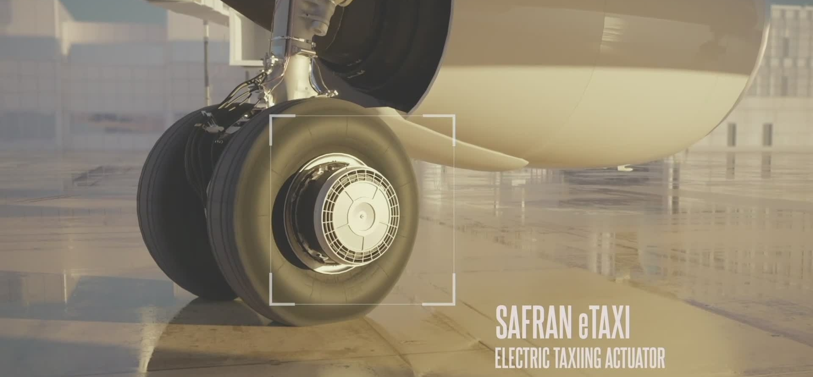
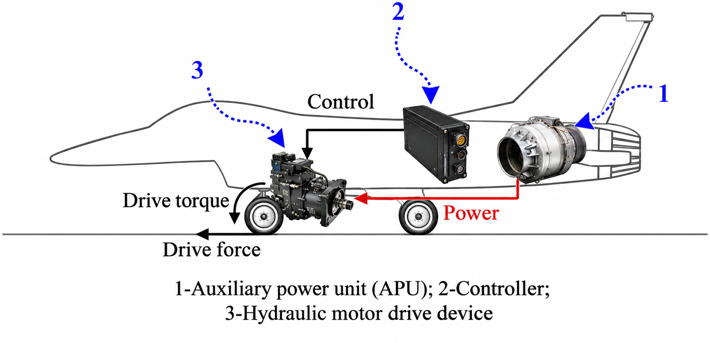
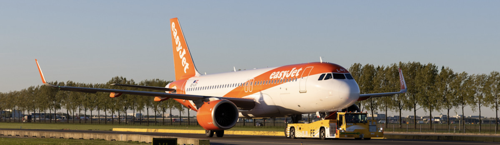
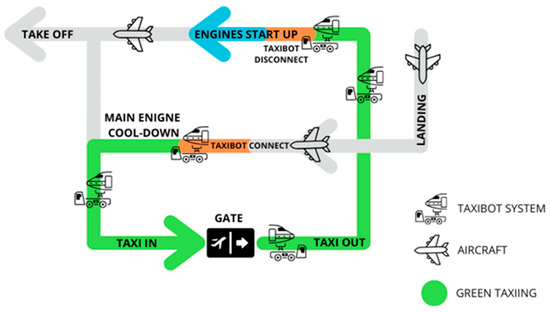

To What Extent Could Motorised Traction Systems Improve the Economics and Sustainability of Aircraft Ground Operations?
Image credit: Author's own photograph.
Abstract
Aircraft burn millions of tons of fuel on the ground every year while utilising their main jet engines for traversing airport taxiways, which are optimised primarily for flying. Millions of tonnes of CO₂ are emitted, creating a substantial impact on global environmental emissions and raising operational costs for airlines by billions.
This report evaluates two emerging approaches aimed at dramatically reducing this issue, integrated wheel-motor systems and external towing vehicles, examining their real world technical and operational feasibility, environmental benefits and economic implications.
Research indicates that wheel motors could significantly reduce taxiing fuel consumption on paper, but the additional aircraft weight would likely cause an increase in airborne fuel consumption. Power requirements and integration challenges also limit technical practicality.
External towing systems appear promising, with a stand out real world experimental example, TaxiBot, demonstrating real-world operational feasibility.However, the practicality and environmental benefits of large-scale deployment remain uncertain, depending on airport infrastructure and sustainable energy sources.
Overall, both technologies offer opportunities to improve the sustainability and economic efficiency of aircraft ground operations. However, external towing systems currently appear more practical for near-term implementation, while further technological development could improve the viability of onboard traction systems.
Introduction — The problem with conventional taxiing
Globally, there are anywhere between 160,000 to 200,000 planes taking off every day (Slattery, 2026). Passenger aircraft in Europe alone burn an estimated five million tonnes of fuel during taxiing annually, costing an estimated £5.63 billion (Ajayi, 2023). Taxiing is the process where aircraft move along the ground between airport gates and runways, conventionally by using thrust from their main engines (Liu et al., 2024). It accounts for approximately 10% of commercial aircraft total fuel consumption (Ajayi, 2023; Knacker et al., 2026) and creates a substantial environmental impact, with an estimated 13 million tonnes of CO₂ emitted in Europe per annum (Ajayi, 2023).
Global air passenger numbers are projected to grow by approximately 3.8% annually, according to IATA, potentially resulting in over 4.1 billion additional passenger trips per annum by 2043 (Knacker et al., 2026), making it especially important to improve the sustainability of aircraft ground operations. The FlightPath 2050 initiative has mandated that, all European airports are expected to achieve zero-emission aircraft ground operations by 2050 (Ajayi, 2023).
Integrated wheel-motor systems
One solution is installing a motor system on the nose gear of aircraft to enable taxiing without use of the main engines (Liu et al., 2024). The reduced main-engine operation of aircraft using this taxiing system can significantly decrease emissions and reduce fuel consumption by 68.2% during taxiing (Maciejewska et al., 2025; Liu et al., 2024). Widespread electric taxiing could reduce global aviation fuel consumption by 846 million kg annually, although this is heavily dependant on aircraft type and operating conditions (Groot and Roling, 2022; Knacker et al., 2026). Wheel motors could also reduce tyre wear by minimising the friction at touchdown, typically seen as a cloud of smoke, extending tyre lifespan and reducing replacement costs (Li and Wang, 2026).
Figure 1: Safran eTAXI electric wheel motor prototype (Safran, n.d.)
However, current electric wheel motor prototypes have a long list of drawbacks, such as slow operating speeds, large size, and most importantly, weight (Salihu et al. 2021). For example, one full electric taxiing system prototype weighed in excess of 150 kg (Liu et al., 2024), while in 2017, the promising eTAXI prototype developed by Safran weighs over 300 kg and protrudes far from the wheel hub as shown in figure 1, which is a safety hazard for ground crew (Liu et al., 2024). The increased aircraft weight has a large impact on airborne fuel consumption (Salihu et al. 2021), meaning that the net yield could be small or even negative. Hence, electric motor technology may not yet be sufficient. On the other hand, hydraulic motor systems are more compact, accurately controllable and have a large power-to-weight ratio than electric systems. Hydraulic systems already have a well established use in airliners, such as flight control surfaces, retracting landing gear, braking systems, and other actuation systems (Liu et al., 2024). Hence, making them potentially more easily to integrate and suitable for saving weight and space inside an airliner. In order to power wheel-motor systems a large amount of energy is needed, 200 kW estimated for taxiing the A319 along flat ground (Keçeci et al., 2022). External fuel cells have been proposed to provide the plane with energy for taxiing while not adding extra weight to the flight (Keçeci et al., 2022). However, the operation for attaching and removing fuel cells from airliners on the ground would need further consideration, potentially introducing operational delays.
Figure 2: Diagram of APU and Motor system (Source: Liu et al., 2024)
A second proposal suggests supplying energy from aircraft's auxiliary power unit (APU) to the wheel-motor as shown in figure 2 (Liu et al., 2024; Keçeci et al., 2022; Safran, n.d.). The APU burns significantly less fuel compared to jet engines (Keçeci et al., 2022). However, it is designed for low power operations such as air conditioning and lighting and is insufficient to provide the necessary locomotive power to taxi the aircraft (Keçeci et al., 2022). Furthermore, Installing electric or hydraulic motor systems in landing gear introduces significant adjustments to aircraft architecture and consequently major engineering and certification challenges (Salihu et al. 2021). Hence, onboard motor systems have some major challenges to overcome with no clear solutions currently presented, from increased aircraft weight counteracting fuel savings on the ground to the absence of a clear method of powering them.
External towing systems — TaxiBot
A second proposed solution is the use of external towing vehicles to taxi aircraft between the apron and runway (Maciejewska et al., 2025; Salihu et al., 2021; easyJet, 2026). Unlike integrated wheel-motor systems, the additional equipment is not carried during flight, avoiding the associated additional in-flight fuel costs (Salihu et al., 2021; Keçeci et al., 2022).
Figure 3: TaxiBot vehicle towing an easyJet Airbus A320neo aircraft (easyJet, 2026)
One promising development is TaxiBot, a semi-robotic tractor designed to tow aircraft entirely under its own power, without the use of the aircraft main engines (easyJet, 2026; Maciejewska et al., 2025), while the aircraft systems are powered buy the APU (easyJet, 2026). The first easyJet passenger flight to use TaxiBot during ground operations took place on 30 April 2026, using an A320neo aircraft at Amsterdam Schiphol Airport (easyJet, 2026). Following successful automated taxiing deployment tests, three more easyJet Airbus A320neo aircraft are now being permanently fitted with TaxiBot compatibility hardware as part of the programme (easyJet, 2026). The ecumenic effects appear to vary massively depending on the unique operations at each individual airport. Estimates range from a profit of approximately £75 per flight at JFK to a loss of £120 per flight at Honolulu (Vaishnav, 2014). Hence, the technology may be more financially attractive at airports with longer average taxiing distances (Groot and Roling, 2022). United States airports have consistently higher taxi times, offering greater potential savings than in Europe (Groot and Roling, 2022). Research suggests that widespread use of electric towing vehicles could deliver considerable reductions in aviation emissions (Salihu et al., 2021), Potentially reducing the fuel used for taxiing by up to 80% in some scenarios (Maciejewska et al., 2025). However, Conventional diesel-powered towing vehicles still produce emissions (Maciejewska et al., 2025). Taxibot is fully electric (easyJet, 2026), which may reduce local air pollution but increase airport electricity demand (Maciejewska et al., 2025). Therefore, the overall environmental benefit depends partly on how that electricity is generated (Salihu et al., 2021). Some research suggests that existing towing vehicles may cause congestion issues at larger airports due to traveling more slowly than conventionally taxiing aircraft and potential additional time required to connect and disconnect towing vehicles (Salihu et al., 2021). However, other sources suggest a lower net taxiing time due to the faster acceleration of e-tractors, stating that airport traffic will not be hindered (Salihu et al., 2021). Furthermore, Unlike onboard traction systems, TaxiBot requires airports to have the necessary vehicles and infrastructure. This limits where it can be used, and there is currently limited research into planning (Salihu et al., 2021). Hence, large scale operations of external towing systems require further investigation (Salihu et al., 2021).
Figure 4: TaxiBot operating sequence during aircraft taxi-in and taxi-out (Maciejewska et al., 2025)
Operationally, commercial aircraft engines require 2–7 minutes running to warm-up before takeoff, depending on engine type and conditions (Schiphol Airport, 2020) as shown in figure 4. Hence, neither solution can completely eliminate main-engine operation during taxiing.
Conclusion
Integrated wheel motors and external towing systems both offer significant potential towards making aircraft ground operations more economic and sustainable via reduce aircraft taxiing fuel consumption and therefore operating costs and emissions.
The systems explored aim to remove the aircrafts dependance on its main engines for traversing airport taxiways between gates and runways. However neither solution can eliminate all pre-takeoff engine operation due to warm-up requirements.
Integrated wheel motors supposedly allow for greater operational independence but face major unsolved challenges involving weight, power supply and aircraft integration. Consequently, the technology currently appears unfeasible.
External towing systems on the other hand avoid in-flight weight penalties and have demonstrated promising practical viability in the real world, although their benefits depend on airport infrastructure, operating conditions and sustainable energy sources.
Further research is needed into the feasibility of external towing system operations at large, highly contested airports where time efficiency is key. Plans for constructing the necessary infrastructure at airports to accommodate this system are unknown, though it is still in an early developmental stage.
Overall, external towing systems appear more viable in the near future, while further technological development and operational research could improve the long-term potential of both solutions.
References
Ajayi (2023) easyJet (2026) Groot and Roling (2022) Keçeci et al. (2022) Knacker et al. (2026) Li and Wang (2026) Liu et al. (2024) Maciejewska et al. (2025) Safran (n.d.) Salihu et al. (2021) Schiphol Airport (2020) (Slattery, 2026) Vaishnav (2014)